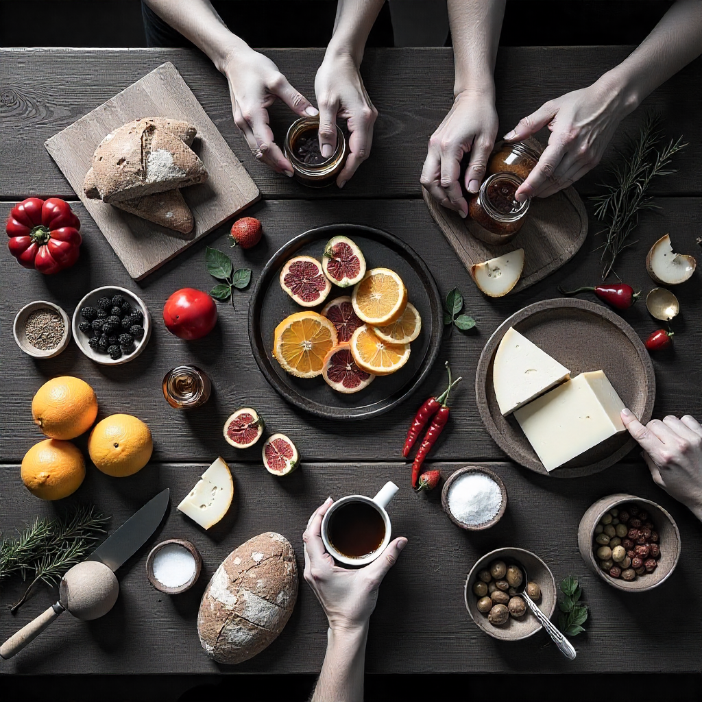
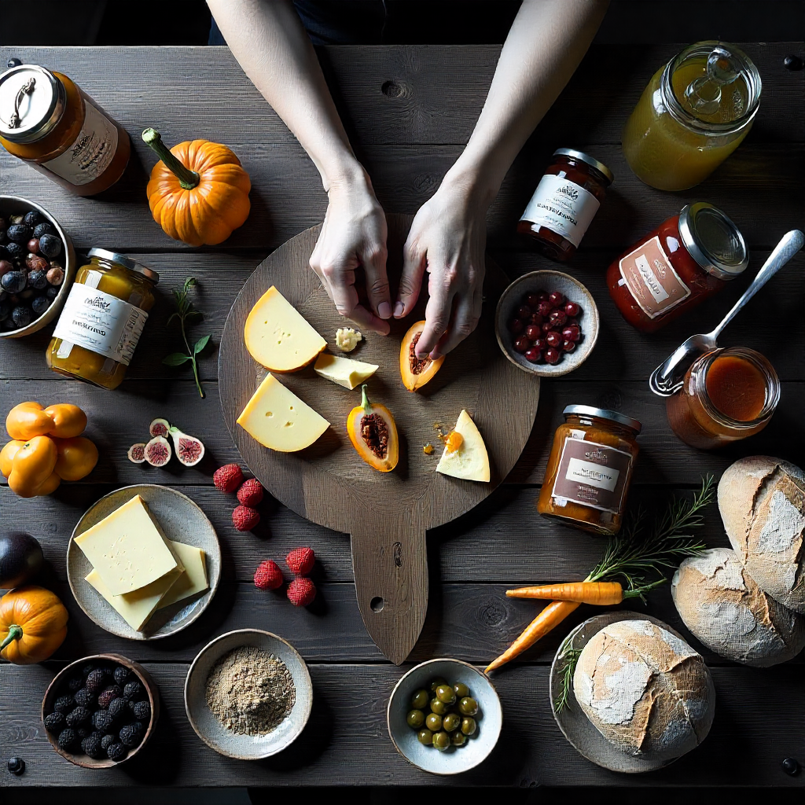
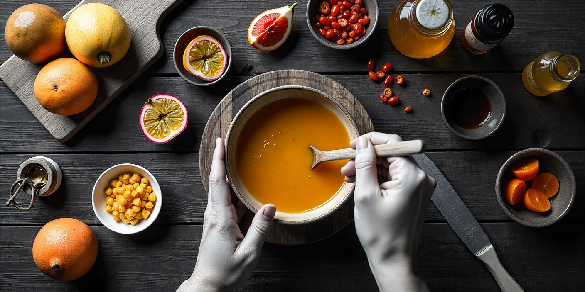
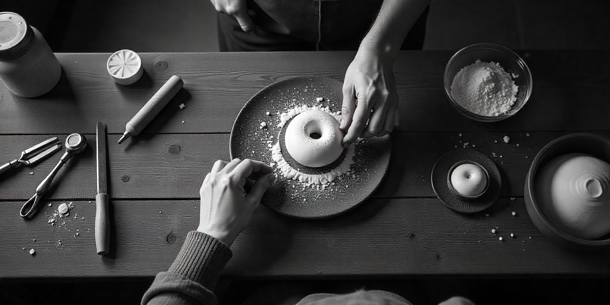
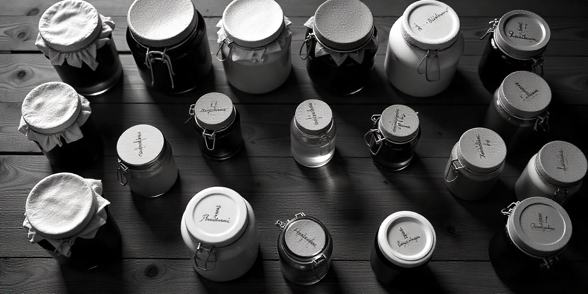
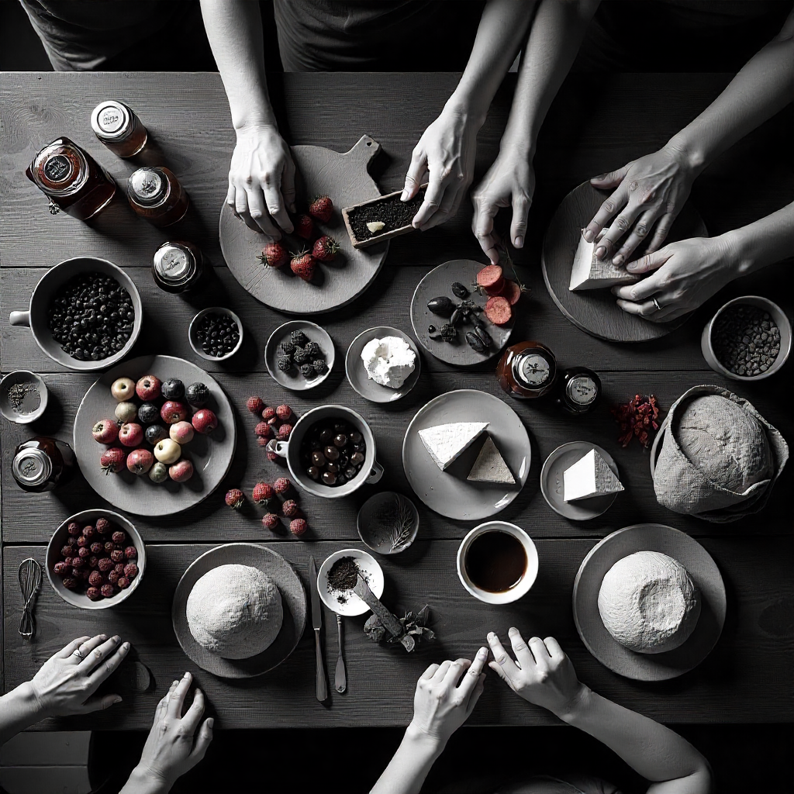
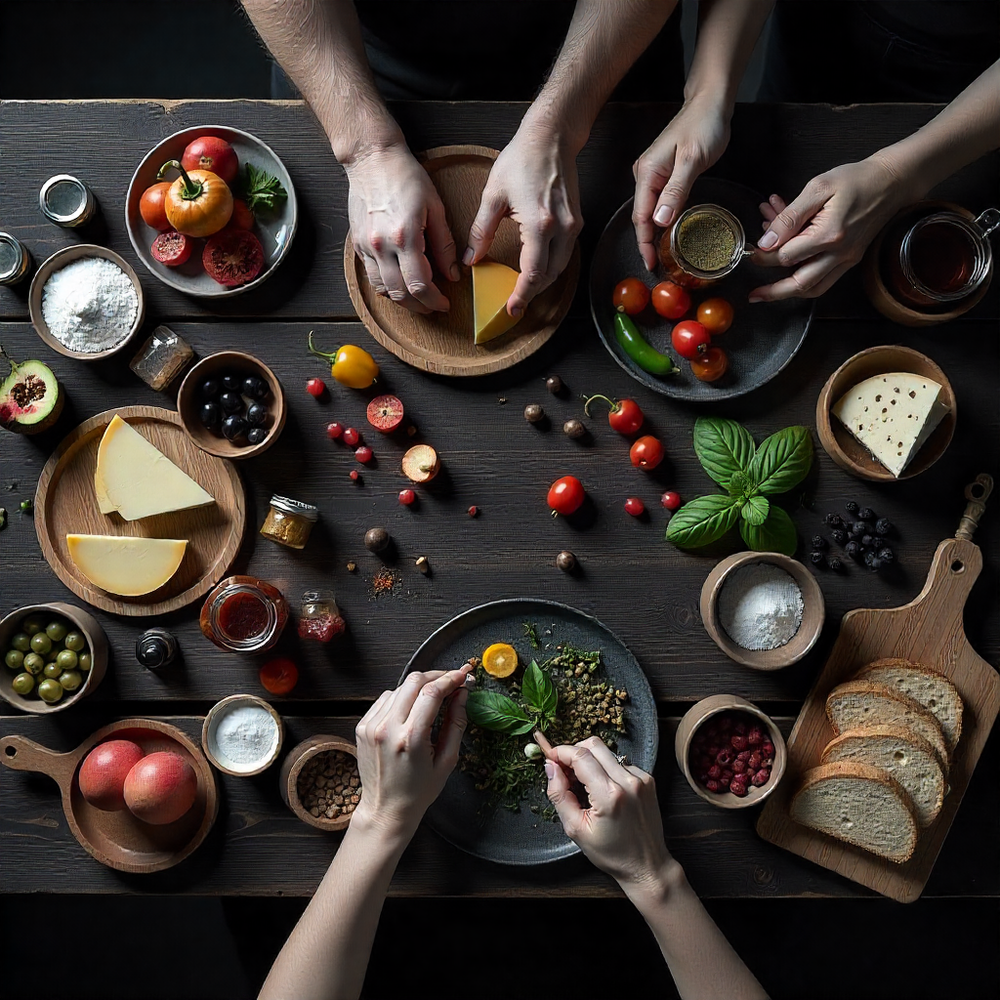

Como criar, vender e escalar alimentos artesanais
2026
COMO CRIAR,
VENDER E
ESCALAR
ALIMENTOS

Gabriel Petelinkar
DA AUTENTICIDADE AO
RECONHECIMENTO DE
MERCADO

POR QUE ESTE GUIA PODE TRANSFORMAR SEU NEGÓCIO?
Este material nasceu da prática de quem vive o universo artesanal todos os dias. É fruto de 12 anos de experiência desenvolvendo produtos, acompanhando produtores e analisando marcas que se tornaram referência em qualidade e autenticidade.
O conteúdo foi criado para ser aplicado imediatamente.
Se você já produz, este guia pode representar uma virada estratégica, ajudando a identificar oportunidades, aprimorar processos e fortalecer sua marca no mercado.
Se você ainda não produz, este é o material ideal para começar do jeito certo: com propósito, estratégia e visão de futuro.
Produzir alimentos artesanais transcende o ofício, é expressar cultura, identidade e propósito. Quando essa paixão se une à gestão, técnica e comunicação estratégica, o artesanal deixa de ser apenas pequeno e se torna grande, sustentável e admirado.
Estrutura do guia
Para facilitar a aplicação prática, o conteúdo está estruturado em três grandes blocos:
1. Fatores de diferenciação do produto — O que faz um item artesanal se destacar em sabor, qualidade e autenticidade.
2. Estratégias de comunicação — Como contar sua história, construir uma marca sólida e conectar-se com o consumidor.
3. Gestão, propósito e credibilidade — As bases que sustentam negócios consistentes, humanos e de longo prazo.
ÍNDICE
CRIAR — FATORES DE DIFERENCIAÇÃO DO PRODUTO
1. Ingredientes nativos: regionalismo com pegada global8
2. Produtos Extremos: vitrine estratégica, não volume de vendas10
3. Produtos Agridoces: O equilíbrio que conquista paladares12
4. Fermentação: O sabor que nasce do tempo14
5. Experiência Sensorial: os cinco sentidos vendem16
6. Produto de nicho e exclusividade: encontre seu público18
7. Embalagem: seu vendedor silencioso21
VENDER — ESTRATÉGIAS DE COMUNICAÇÃO
8. Narrativa e comunicação estratégica: sua história vende25
9. Eventos e degustações: criando defensores da marca28
10. Harmonização e versatilidade: ampliando ocasiões de consumo30
11. Educação do consumidor: criando embaixadores da marca32
ESCALAR — GESTÃO, PROPÓSITO E CREDIBILIDADE
12. Colaboração e parcerias: juntos somos mais fortes35
13. Sustentabilidade e responsabilidade: o futuro é consciente37
14. Certificação e selos de qualidade: credibilidade tangível39
15. Profissionalização e consistência: a base do crescimento sustentável42
APLIQUE.
EXPERIMENTE.
EVOLUA.
O artesanal do futuro começa com quem decide fazer diferente hoje.
Mais do que um guia, este é um convite para repensar sua marca, fortalecer seu propósito e conquistar o reconhecimento que seu trabalho merece.
QUEM SOU EU
Sou Gabriel Petelinkar Pereira, engenheiro agrônomo, especialista em agronegócios, liderança e gestão de pessoas, empreendedor e palestrante. Atuo como consultor nas áreas de gestão de pessoas no agro, liderança e processos de alimentos artesanais e agroindustriais, enquanto construo minha própria trajetória com produtos artesanais há mais de 12 anos.
Também sou jurado técnico do principal prêmio de qualidade artesanal do país, o que me proporciona uma visão ampla e atualizada sobre as práticas e tendências que moldaram o setor.
Desde 2008, quando iniciei minha graduação em Engenharia Agronômica na Universidade Federal da Paraíba, acompanho de perto a evolução do mercado de produtos alimentícios artesanais no Brasil. O campus da universidade, localizado em Areia (PB), cidade rural que se tornou um polo gastronômico e referência na produção de cachaças, doces, polpas de frutas e outras diversas delícias artesanais, foi o ponto de partida dessa jornada.
Minha trajetória une conhecimento técnico e vivência de mercado, permitindo compreender não apenas como desenvolver produtos de alta qualidade, mas também como transformá-los em marcas reconhecidas e desejadas pelos consumidores.
Com este relatório, meu objetivo é compartilhar aprendizados, análises e caminhos práticos que ajudem produtores artesanais a crescer com autenticidade, propósito e visão de futuro.
CRIAR
FATORES DE
DIFERENCIAÇÃO
DO PRODUTO
01
CRIAR — CAPÍTULO 1
1. INGREDIENTES NATIVOS: REGIONALISMO COM PEGADA GLOBAL
Apresentação geral
A força dos ingredientes nativos e da identidade territorial representa hoje um dos pilares mais relevantes para produtos artesanais. Nos últimos anos, os ingredientes regionais deixaram de ser apenas curiosidade e passaram a representar uma estratégia concreta de valor e diferenciação no mercado.
O consumidor contemporâneo se conecta com histórias autênticas, e essa verdade se reflete diretamente no que consome. Por isso, seu produto precisa contar uma narrativa clara, envolvente e cheia de personalidade, mostrando de onde vem, evidenciando em cada detalhe sua origem e diferencial. É o regionalismo para um público global, sem perder a essência.
Selos geográficos, que valorizam a tradição local e garantem autenticidade e qualidade ao consumidor, não apenas certificam o produto, eles carregam consigo a cultura e o território de onde ele nasce.
Quando um produto traz um ingrediente regional bem aplicado, como o umbu do sertão nordestino, o pequi do cerrado, a pimenta jiquitaia da Amazônia ou o melado artesanal do Paraná, ele não vende apenas sabor: vende história, exclusividade, identidade e conexão emocional.
O que está acontecendo no mercado
As marcas que mais se destacaram nos últimos anos não são necessariamente aquelas com os produtos mais refinados, grandes linhas de produção ou altos investimentos, mas sim as que traduzem o território em sabor.
No concurso em que atuei como jurado, isso ficou evidente: os molhos que utilizavam ingredientes locais de forma equilibrada, sem exageros e permitindo que cada elemento brilhasse, conquistaram as maiores notas e encantaram o paladar dos especialistas.
A lógica é simples: ingredientes diferenciados contam histórias únicas, difíceis de serem copiadas, e levam com orgulho sabores regionais aos quatro cantos do mundo. O mercado global de superalimentos, que inclui ingredientes nativos brasileiros, está em forte expansão, demonstrando o interesse crescente do consumidor por produtos autênticos e com origem comprovada.
O que o produtor pode aprender com isso
- Buscar o melhor do seu território: frutas nativas, ervas locais, especiarias regionais ou até uma forma única de usar um ingrediente comum.
- O equilíbrio é fundamental: o ingrediente especial deve se destacar no sabor e no aroma, sempre em harmonia com o restante do preparo.
- Ingredientes autênticos têm apelo internacional: quando bem apresentados, despertam desejo, curiosidade e percepção premium em mercados estrangeiros.
- Comunicação clara traduz histórias: explicar o contexto cultural e o significado dos ingredientes torna o produto acessível e envolvente para novos públicos.
Como transformar isso em vantagem competitiva
- Use o ingrediente local como pilar de marketing e narrativa: fale sobre ele nas redes sociais, na embalagem e na história do produto.
- Valorize o produtor local: crie parcerias, conte quem fornece e como é produzido cada ingrediente.
- Registre o processo: mostre que é artesanal, feito por mãos humanas e conectado à terra.
- Combine criatividade e técnica: um produto aparentemente comum pode se tornar inovador e refinado com a escolha certa de ingredientes.
- O cotidiano pode ser seu diferencial: o que é comum para você pode ser extraordinário para seu cliente.
Números de mercado
| 297 bilhões | Mercado global de superalimentos: projeção de atingir US$ 297,10 bilhões até 2029, crescendo a um CAGR de 10,24% — Mordor Intelligence, 2024 |
| 3,5% | Frutas exóticas brasileiras: em 2024, representaram 1,2% do volume comercializado na CEAGESP, mas geraram 3,5% do faturamento, demonstrando alto valor agregado — Abrafrutas/CEAGESP, 2024 |
| 1,1 M toneladas | Exportações de frutas: atingiram US$ 1,28 bilhão, com 1,1 milhão de toneladas, salto de 49% em uma década — Abrafrutas/MAPA, 2024/2025 |
| 3 bilhões | Japão: importou mais de US$ 3 bilhões em produtos agropecuários brasileiros em 2024, com demanda crescente por ingredientes de alta qualidade como castanha-do-Brasil — Ministério da Agricultura, 2025 |
02
CRIAR — CAPÍTULO 2
2. PRODUTOS EXTREMOS: CATEGORIA ESTRATÉGICA NO PORTIFÓLIO
Apresentação geral
Depois de mais de uma década acompanhando o comportamento de produtores e consumidores de alimentos artesanais, ficou claro que produtos de nicho extremo não são um problema. Pelo contrário: são uma categoria estratégica dentro de um portfólio bem construído.
No contexto artesanal, chamamos de produtos extremos aqueles que apresentam alguma característica elevada acima do padrão tradicional, seja em intensidade sensorial, tempo de produção, complexidade técnica ou proposta de uso.
Exemplos comuns no mercado artesanal:
- Queijos com maturação muito longa, acima de 12, 18 ou 24 meses
- Cachaças ultra envelhecidas, com longos períodos em barris específicos
- Molhos extremamente ardidos, feitos com pimentas de alta pungência
- Vinagres muito ácidos ou concentrados, voltados a usos específicos
- Fermentados com sabores intensos e pouco convencionais
Esses produtos não existem para agradar todo mundo, e nem precisam. Eles existem para marcar território, construir identidade e abrir portas que produtos convencionais dificilmente abririam.
O que está acontecendo no mercado
O mercado mostra que produtos extremos não são campeões de volume, mas são catalisadores de posicionamento. Marcas artesanais maduras utilizam esses produtos como acesso a mercados diferenciados, como:
- lojas especializadas
- empórios premium
- restaurantes autorais
- eventos gastronômicos
- concursos e premiações
Enquanto isso, o faturamento recorrente vem dos produtos equilibrados, versáteis e fáceis de incorporar ao dia a dia.

O que o produtor pode aprender com isso
- Produtos extremos devem existir como categoria estratégica, não como aposta única.
- Eles funcionam como ponte para mercados de maior valor percebido.
- Ajudam a construir autoridade técnica e narrativa de marca.
- Criam diferenciação real, difícil de copiar.
- Raramente serão o campeão de vendas, mas frequentemente serão o produto que faz o cliente conhecer a marca.
Como transformar isso em vantagem competitiva
- Inclua pelo menos um produto extremo no portfólio, com função clara de posicionamento.
- Deixe explícito o papel dele: "Este produto não é para todos, é para quem busca uma experiência específica."
- Use-o para acessar novos canais, não para sustentar o fluxo de caixa.
- Explore edições limitadas, lotes numerados e histórias de processo.
- Faça a ponte: quem entra pelo extremo deve ser conduzido para os produtos principais da marca.
Números de mercado
| 12% crescimento | Queijos com maturação acima de 18 meses representam menos de 12% das vendas: Porém são os principais responsáveis por: Prêmios e reconhecimento técnico (Data & Trends of the European food and drink industry 2024) |
| R$ 85,30 | O Brasil é o maior mercado de condimentos da América Latina, com ticket médio de compra de R$ 85,30 por consumidor — Varejo360 / ABIA, 2024. |
| 20 a 30% | Produtos extremos tendem a ocupar o grupo dos 20–30% de SKUs que geram imagem e diferenciação, mas não volume constante. (NielsenIQ – Specialty & Gourmet Food Trends, 2024) |
03
CRIAR — CAPÍTULO 3
3. PRODUTOS AGRIDOCES: O EQUILÍBRIO QUE CONQUISTA PALADARES
Apresentação geral
Uma tendência que vem se consolidando nas prateleiras especializadas, feiras gastronômicas e no consumo doméstico é o crescimento dos produtos artesanais com perfil agridoce. Esse território sensorial vai muito além dos molhos e aparece em geleias, chutneys, conservas, antepastos, queijos, embutidos, bebidas fermentadas, vinagres e até panificados especiais.
O agridoce surge como resposta direta a um consumidor que busca equilíbrio, sofisticação e prazer, e não apenas intensidade. Ao combinar elementos adocicados naturais, como frutas, mel, rapadura ou caramelizações, com acidez, salinidade ou picância, esses produtos entregam uma experiência mais ampla e acessível.
Mais do que uma moda, os produtos agridoces representam uma evolução no consumo de alimentos artesanais. Eles deslocam o foco do "impacto imediato" para a harmonização, a versatilidade e o uso recorrente, ocupando espaço tanto no dia a dia quanto em ocasiões especiais. Quando bem posicionados, tornam-se peças-chave em experiências gastronômicas gourmet e na construção de valor percebido da marca.
O que está acontecendo no mercado
O consumidor brasileiro, tradicionalmente acostumado a sabores intensos e marcantes, vem migrando gradualmente para experiências mais equilibradas e sensoriais. Produtos que combinam doce, salgado, ácido e, em alguns casos, picante, ganham destaque por entregarem complexidade sem agressividade.
Frutas como maracujá, goiaba, maçã, abacaxi, manga, caju, jabuticaba e frutas regionais são amplamente utilizadas para dar identidade e personalidade aos produtos, sem mascarar o ingrediente principal. Elementos como mel, rapadura e caramelizações naturais reforçam o apelo artesanal e aproximam o produto de narrativas ligadas à origem e ao território

O que o produtor pode aprender com isso
- Ampliam o público consumidor
- Agradam tanto quem busca sabores sofisticados quanto quem evita produtos muito intensos. Isso reduz barreiras de entrada e aumenta a base de clientes.
- Geram mais ocasiões de consumo
- São utilizados no café da manhã, em entradas, acompanhamentos, pratos principais e tábuas gastronômicas, o que aumenta a frequência de uso e a recompra.
- Funcionam como porta de entrada para novos consumidores
- O uso de frutas da região ou da estação reduz custos, fortalece o vínculo territorial e cria narrativas autênticas de origem e propósito.
Como transformar isso em vantagem competitiva
- Use frutas nativas ou com identidade local: umbu, cajá, seriguela, jabuticaba. Isso agrega autenticidade e exclusividade.
- Busque equilíbrio real: o agridoce não deve ser melado nem ácido demais. O segredo está na harmonia entre doce e picante.
- Rótulos claros e atrativos: destaque visual para o ingrediente principal, como "Molho de Pimenta com Maracujá".
- Explore a versatilidade: mostre nas redes sociais como o produto combina com carnes, queijos, lanches e entradas.
- Eduque o consumidor: sugira harmonizações e receitas que ampliem as ocasiões de consumo.
Números de mercado
| 4,1% | O mercado global de geleias, compotas e chutneys foi estimado em US$ 9,8 bilhões em 2024, com crescimento médio anual de 4,1% — IMARC Group, 2025. |
| 52% e 89% | Geleias gourmet com pimenta: morango com pimenta cresceu 52% e abacaxi com pimenta 89% no mesmo período — Bom Princípio Alimentos, 2025 |
| 4% das vendas | Mercado Centro-Oeste: representa 4% das vendas da empresa, com elevado potencial de crescimento — Bom Princípio Alimentos, 2025 |
| B2B | Produtos agridoces estão entre os principais itens de harmonização em hamburguerias e cafeterias artesanais, segundo dados de mercado B2B 2025. |
04
CRIAR — CAPÍTULO 4
4. FERMENTAÇÃO: O SABOR QUE NASCE DO TEMPO
Apresentação geral
A fermentação materializa a valorização que o consumidor tem dado aos processos minuciosos de preparo, principalmente no universo dos produtos artesanais. Na pimenta, ela transforma o sabor, suaviza a ardência, aumenta a complexidade e adiciona uma assinatura única ao produto.
Massas, queijos, cervejas, vinhos de frutas, picles, iogurtes, kefirs, kombuchas, cachaças e doces, todos esses preparos passam por processos de fermentação que os diferenciam e agregam valor muito além do preço. A simples adição de "Fermentação Natural" ao lado da palavra "Pão", por exemplo, eleva significativamente a percepção sobre a qualidade do produto.
O que está acontecendo no mercado
Com a aproximação da culinária internacional no Brasil, especialmente a oriental, os produtos fermentados vêm ganhando destaque crescente. O interesse do consumidor é motivado tanto pela curiosidade quanto pelo valor agregado, que traduz cuidado, tempo e habilidade na produção.
Marcas que investem na fermentação se destacam justamente pela originalidade e diferenciação. Não se trata apenas de técnica, mas de contar a história do tempo, do cuidado e da origem dos ingredientes, aproximando sabores tradicionais de influências globais.
O mercado global de alimentos e bebidas fermentados foi avaliado em US$702,72 bilhões em 2023 e deve crescer a uma taxa anual composta de 7,5% até 2030. Esse crescimento é impulsionado principalmente pela consciência sobre saúde intestinal, probióticos e benefícios digestivos.
O que o produtor pode aprender com isso
- Fermentação é uma narrativa poderosa: mostra domínio técnico específico, paciência e diferenciação real.
- Aumenta a durabilidade natural: reduz a necessidade de conservantes artificiais, agregando valor ao produto.
- Cria produtos com complexidade única: competem não pelo preço, mas pela experiência que proporcionam ao consumidor.
- Benefícios funcionais: probióticos e melhor digestibilidade elevam a percepção de valor e justificam preços premium.
Como transformar isso em vantagem competitiva
- Conte histórias únicas: mostre nas redes sociais, na embalagem e em vídeos cada etapa da fermentação, destacando o tempo e cuidado investidos.
- Eduque o consumidor: destaque os benefícios funcionais da fermentação, probióticos, digestibilidade, sabor complexo.
- Construa linhas de edição limitada: produtos fermentados exclusivos geram desejo e reforçam a imagem de artesanal premium.
- Explore harmonizações: sugira combinações que mostrem a versatilidade do produto e aumentem o consumo em diferentes ocasiões.
- Diferenciação técnica: fermentação controlada e bem executada é barreira de entrada para concorrentes amadores.
Números de mercado
| US$ 383 bi | O mercado global de alimentos fermentados foi avaliado em US$ 243,6 bilhões em 2024 e deve atingir US$ 383,8 bilhões até 2033 (CAGR ≈ 4,8%) — IMARC Group, 2025. |
| 52% e 89% | Preferência crescente: consumidores valorizam produtos naturais, funcionais e com benefícios digestivos, impulsionando a demanda — WHO, 2024 |
| 80 bilhões | O mercado de produtos probióticos atingiu US$ 58 bilhões em 2024, com expectativa de chegar a US$ 80 bilhões até 2033 — Verified Market Reports, 2025. |
| 57% | 57% dos consumidores priorizam produtos naturais e funcionais com benefícios digestivos — WHO / Global Consumer Trends, 2024. |
05
CRIAR — CAPÍTULO 5
5. EXPERIÊNCIA SENSORIAL: OS CINCO SENTIDOS VENDEM
Apresentação geral
A experiência sensorial é o ponto de conexão mais poderoso entre o produto artesanal e o consumidor. Mais do que sabor, ela envolve textura, aroma, aparência, som e emoção. Quando bem trabalhada, transforma o simples ato de consumir em uma lembrança, e são as lembranças que constroem fidelidade.
A primeira impressão é a que fica. A cor, por exemplo, muitas vezes passa despercebida ou é tratada como detalhe secundário, mas é um elemento decisivo na decisão de compra.
No início da minha trajetória com molhos de pimenta, não dei atenção à cor e tive prejuízos significativos. O sabor e a qualidade estavam ali, mas o líquido opaco (oxidado) e amarelado afastava os interessados. Precisei recolher um lote inteiro, pedir desculpas a revendedores e clientes, corrigir o erro e trabalhar para reverter aquela imagem.
O que está acontecendo no mercado
Os cinco sentidos, quando equilibrados, influenciam emoções, aumentam o reconhecimento da marca, comunicam identidade, fortalecem a primeira impressão, auxiliam na decisão de compra e fidelizam o cliente.
A cor do alimento, o design dos rótulos e embalagens, a textura do produto, a facilidade de manuseio, o som ao abrir e até o aroma que se espalha compõem a percepção de qualidade. Marcas que integram esses elementos de forma estratégica conseguem se destacar e criar reconhecimento imediato.
Estudos mostram que mais de 70% das decisões de compra são influenciadas por percepções visuais e táteis antes da degustação. Um produto artesanal precisa comunicar sua qualidade antes mesmo de ser provado, reafirmando que foi feito não apenas para ser consumido, mas para ser apreciado.
O que o produtor pode aprender com isso
- Visão: cor, brilho, textura e embalagem. Produtos com cores naturais, vibrantes e consistentes transmitem confiança e despertam apetite visual.
- Olfato: o aroma é o primeiro impacto real. Em molhos, geleias, cafés e queijos, deve equilibrar intensidade e identidade. Aromas limpos e naturais são sinal de qualidade.
- Paladar: o sabor é a assinatura do produtor. Encontrar o equilíbrio entre doçura, acidez, sal e picância define o caráter do produto.
- Tato: a textura comunica tanto quanto o sabor. Cremoso, crocante, aveludado ou firme, o importante é a coerência com a proposta.
- Audição: até o som da crocância ou o "pop" ao abrir uma garrafa influencia a experiência e desperta prazer.
Como transformar isso em vantagem competitiva
- Realize testes sensoriais: com consumidores e influenciadores, comparando variações de cor, textura e sabor.
- Registre descritores sensoriais: picante, frutado, defumado, cítrico, encorpado. Use-os na comunicação estratégica.
- Embalagem como extensão sensorial: material, peso, toque e rótulo devem contar parte da história.
- Coerência entre promessa e entrega: se o produto se diz artesanal, o consumidor precisa sentir isso no sabor, textura e experiência completa.
- Explore degustações presenciais: em feiras e pontos de venda. O contato direto com o produto é o melhor argumento de venda.
- Invista em narrativas visuais e sonoras: vídeos mostrando textura, som e preparo despertam desejo de forma instantânea nas redes sociais.
Números de mercado
| 70% | Mais de 70% das decisões de compra são influenciadas por percepções visuais e táteis antes da degustação — NielsenIQ, 2024. |
| 60% | Embalagens premium aumentam a percepção de valor em até 60%, quando alinhadas à identidade da marca — Lucidpress, 2024. |
| 25% | Consumidores pagam, em média, 25% a mais por produtos que oferecem experiências multissensoriais completas — Harvard Business Review, 2024. |
06
CRIAR — CAPÍTULO 6
6. PRODUTO DE NICHO E EXCLUSIVIDADE: ENCONTRE SEU PÚBLICO
Apresentação geral
Um dos grandes equívocos de quem começa a produzir artesanalmente é acreditar que o sucesso está em agradar a todos. No mercado artesanal, a força não está na escala, mas na identidade bem definida. Marcas sólidas nascem quando o produtor sabe exatamente para quem está produzindo e consegue comunicar de forma clara o valor que seu produto oferece.
O mercado artesanal não compete com grandes indústrias, ele ocupa espaços que elas não conseguem alcançar. É colocar o consumidor como protagonista, contando histórias que não cabem em linhas de produção industriais.
A exclusividade é uma ferramenta poderosa nesse contexto: diferencia produtos, cria conexão emocional e faz o consumidor sentir-se parte de um grupo seleto. Produtos raros ou limitados são percebidos como de maior qualidade, aumentam o desejo e reforçam a fidelidade.
O que está acontecendo no mercado
Consumidores estão dispostos a pagar mais por produtos que representem seus valores, estilo de vida e identidade, itens que afirmem quem eles são e a que grupo pertencem.
O mercado global de artesanato movimentou aproximadamente US$51,51 bilhões em 2024 e deve crescer para US$108,91 bilhões até 2033, impulsionado pela valorização de produtos exclusivos e sustentáveis.
Marcas artesanais estão explorando a exclusividade para diferenciar produtos em mercados competitivos, fortalecer conexão e engajamento com o público, e transformar lançamentos em experiências memoráveis.

O que o produtor pode aprender com isso
- Definir o público-alvo é estratégico: vender para todos dispersa energia; conquistar os clientes certos gera fidelidade.
- Produtos de nicho permitem margens mais altas: originalidade, criatividade e identidade territorial tornam o produto mais valorizado.
- Edições limitadas geram desejo e expectativa: produtos não sempre disponíveis sempre aumentam interesse e engajamento.
- Personalização aproxima o consumidor: ele se sente parte do processo, engaja mais e fornece feedback direto.
- Exclusividade fortalece a narrativa da marca: cada lançamento pode contar uma história própria, consolidando identidade e autenticidade.
Como transformar isso em vantagem competitiva
Para encontrar seu público ideal, cruze três perguntas fundamentais:
- O que eu faço bem? Quais produtos, ingredientes ou processos fazem parte do seu DNA produtivo?
- O que o mercado valoriza e está disposto a pagar? Quais tendências dialogam com seu estilo e com sua região?
- O que me diferencia dos demais? Quais histórias, origens, sabores ou métodos tornam seu produto único?
O ponto de interseção dessas respostas é onde seu nicho de marca deve nascer.
Gerando desejo de exclusividade:
- Lançamento de séries limitadas: com ingredientes sazonais ou blends especiais.
- Embalagens customizadas: para datas comemorativas ou eventos específicos.
- Produtos exclusivos: que geram engajamento e expectativa, aumentando interesse digital e físico.
Números de mercado
| 73% | Preferência por autenticidade: 73% dos consumidores brasileiros preferem marcas que transmitem autenticidade e conexão emocional — Forbes Brasil, 2024 |
| 75% | Disposição para pagar mais: 75% dos consumidores estão dispostos a pagar mais por produtos artesanais personalizados — SEBRAE, 2024. |
| 61% | Inovação com tradição: 61% preferem marcas que unem sabor tradicional e inovação — NielsenIQ, 2023. |
| 109 bilhões | O mercado global de produtos artesanais e de nicho foi estimado em US$ 52 bilhões em 2024, devendo atingir US$ 109 bilhões até 2033 (CAGR ≈ 8,7%) — Verified Market Reports, 2024. |
07
CRIAR — CAPÍTULO 7
7. EMBALAGEM: SEU VENDEDOR SILENCIOSO
Apresentação geral
Mais do que proteção, a embalagem é narrativa, identidade e marketing. É a primeira experiência sensorial do cliente com sua marca. Ela comunica cuidado, valor e personalidade, e muitas vezes decide se o produto será comprado ou ignorado.
É através da cor, forma, tamanho, design, criatividade, qualidade e praticidade que a embalagem chama atenção, diferencia a marca e cria impacto visual, estimulando o desejo de experimentar, repetir a compra e indicar o produto a outras pessoas.
A embalagem é a extensão do cuidado que começa na produção e termina nas mãos do cliente.
O que está acontecendo no mercado
Antes mesmo de provar, o cliente avalia a autenticidade, o cuidado e a qualidade do produto através da embalagem.
Uma embalagem bem pensada comunica: "Este é um produto feito com atenção, pensado para você, que merece uma experiência completa."
Estudos mostram que mais de 70% das decisões de compra são influenciadas por percepções visuais e táteis antes da degustação. No universo artesanal, onde história, sabor e experiência se cruzam, a embalagem atua como um vendedor silencioso, capaz de transmitir valor, personalidade e propósito antes mesmo de o cliente provar.
O mercado global de embalagens premium está em franca expansão, movimentando bilhões de dólares, impulsionado pela demanda por produtos artesanais e sustentáveis.
O que o produtor pode aprender com isso
- Material transmite percepção imediata: vidro comunica sofisticação, durabilidade e preservação do sabor; plástico pode ser mais acessível e prático.
- Formato e ergonomia são funcionais: frascos com bico dosador agregam praticidade; garrafas altas e finas transmitem elegância.
- Tamanho influencia valor percebido: embalagens pequenas incentivam experimentação; maiores sugerem economia e fidelização.
- Cor e acabamento geram emoções: tons vibrantes transmitem ousadia e sabor intenso; cores neutras e terrosas remetem à naturalidade e tradição.
- Detalhes funcionais comunicam cuidado: tampas, lacres e dosadores não servem apenas à função prática, comunicam higiene e atenção aos detalhes.
- Rótulo e design em harmonia: imagens, tipografia, ícones e informações sobre origem, ingredientes e processo artesanal precisam criar uma experiência coerente e sensorial.
Como transformar isso em vantagem competitiva
- Destaque o ingrediente principal e a origem no rótulo: crie conexão emocional através da transparência.
- Use cores e tipografia coerentes: com a identidade da marca, criando reconhecimento imediato.
- Conte a história do produto: no rótulo ou por QR code que leva a conteúdos exclusivos.
- Considere sustentabilidade: embalagens reutilizáveis ou ecológicas agregam valor e atraem consumidores conscientes.
- Transforme cada escolha em vantagem: material, formato, tamanho, cor ou funcionalidade devem trabalhar juntos para criar experiência completa.
Números de mercado
| US$ 380 bi | O mercado global de embalagens alimentícias alcançou US$ 380 bilhões em 2025, com projeção de CAGR ≈ 3,5% até 2030 — Mordor Intelligence, 2025. |
| 60% | Embalagens premium: aumentam a percepção de valor em até 60% quando bem executadas — Lucidpress, 2024. |
| US$ 45 bi | O mercado de embalagens de vidro para alimentos foi estimado em US$ 45 bilhões em 2024, com crescimento anual de ≈ 4,5% — Allied Market Research, 2025. |
| 67% | Embalagens sustentáveis: preferidas por 67% dos consumidores, que priorizam marcas ecologicamente responsáveis — Nielsen, 2024. |

VENDER
ESTRATÉGIAS DE
COMUNICAÇÃO
08
VENDER — CAPÍTULO 8
8. NARRATIVA E COMUNICAÇÃO ESTRATÉGICA: SUA HISTÓRIA VENDE
Apresentação geral
Somos movidos por histórias. Gostamos de ouvir, contar e fazer parte delas. O brasileiro, em especial, é criativo, emocional e curioso, conectando-se pelo afeto e pela narrativa. Por isso, não consumimos apenas o que um produto oferece, mas também os significados, lembranças e pessoas que o cercam.
Produtos artesanais que se destacam carregam histórias, do produtor, da origem, do processo e da comunidade envolvida, e transmitem valores que vão além da matéria-prima.
A comunicação estratégica transforma o trabalho artesanal em marca. Para o pequeno produtor, comunicar bem vai além de divulgar produtos: é mostrar com clareza o que torna sua produção única, alinhando cada detalhe, da embalagem ao conteúdo digital, para reforçar uma identidade autêntica e coerente.
O que está acontecendo no mercado
Marcas artesanais com histórias fortes e autênticas se destacam no mercado. Consumidores compartilham produtos que têm significado, transformando cada compra em divulgação espontânea e construção de comunidade. Isso fortalece a marca, gera fidelidade e cria diferenciação real em um mercado competitivo.
Nos últimos anos, o comportamento do consumidor mudou radicalmente. Pesquisas indicam que marcas ativas nas redes sociais têm três vezes mais chances de fidelizar clientes e aumentar o ticket médio. O digital permite ensinar, engajar e criar comunidade de forma escalável.
Considerando que a população brasileira passa cerca de 9 horas por dia nas redes sociais, captar a atenção mesmo por alguns segundos pode transformar a percepção da marca (para o bem ou para o mal).
Hoje, o público busca autenticidade. Fotos e vídeos orgânicos, com narrativa própria e humor genuíno, geram muito mais engajamento do que campanhas tradicionais focadas apenas em promoção.
O que o produtor pode aprender com isso
- Sua história é sua maior arma: conte sua origem e explique suas escolhas com transparência.
- Reforce valores, propósito e missão: de forma clara e constante em todos os pontos de contato.
- Crie experiências e abra diálogos: produtos isolados vendem menos; experiências conectam e geram comunidade.
- Narrativa consistente constrói autoridade: frente à concorrência, ela é um diferencial estratégico que não pode ser copiado.
Como transformar isso em vantagem competitiva
- Mostre o processo e os bastidores: vídeos, fotos e conteúdo educativo aproximam o público da produção artesanal.
- Use redes sociais para humanizar a marca: crie identificação e engajamento mostrando pessoas e histórias reais.
- Desenvolva linhas ou coleções temáticas: valorize território, tradição ou memória afetiva.
- Convide o público a contar suas próprias histórias: mostrando a participação de seus produtos, criando conexões genuínas.
- Invista em vídeos curtos: reels e shorts educativos ou divertidos ampliam alcance e tornam a marca memorável.
- Mantenha consistência: frequência regular de publicações e identidade visual coerente ajudam a construir uma comunidade fiel.
Números de mercado
| 73% | 73% das empresas consideram suas ações em redes sociais eficazes ou muito eficazes — Small Business Trends, 2024. |
| 62% | Marcas que publicam conteúdo com frequência têm 62% mais chances de gerar leads qualificados — Content Marketing Institute, 2024. |
| 54% e 57% | 54% dos consumidores pesquisam produtos nas redes sociais e 57% compram de marcas que seguem — Varejo S.A, 2024. |
| 60% | Identidade visual coesa: aumenta confiança do consumidor em 60% — Lucidpress, 2024. |
| 3x mais | Feedback e retenção: marcas que monitoram e respondem ativamente ao feedback têm 3x mais chances de reter clientes (Microsoft, 2024) |
09
VENDER — CAPÍTULO 9
9. EVENTOS E DEGUSTAÇÕES: CRIANDO DEFENSORES DA MARCA
Apresentação geral
Eventos, feiras e degustações são oportunidades únicas de promover seu produto, educar o consumidor, gerar engajamento e transformar clientes em verdadeiros defensores da marca.
Além disso, esses momentos permitem ouvir feedbacks imediatos, entender preferências e ajustar produtos com agilidade, reforçando a percepção de cuidado e qualidade. Para o consumidor, experimentar vai muito além de provar: é vivenciar a história, o processo e a autenticidade por trás de cada produto.
Alguns dos meus marcos empresariais aconteceram em eventos e feiras que participei, graças às conexões e aos feedbacks que recebi. Aproveitar esses momentos para impulsionar a marca é uma estratégia poderosa, capaz de abrir portas e levar o negócio a outro patamar.
O que está acontecendo no mercado
Produtores que investem em experiências presenciais se destacam em um mercado cada vez mais competitivo e impessoal. Degustações e eventos permitem que o público sinta, literalmente, a diferença entre produtos comuns e artesanais, percebendo cada detalhe: o sabor, o aroma, a textura, o cuidado na produção e o contato com quem realmente faz.
Essas experiências geram conexão emocional, fortalecem a fidelidade e posicionam a marca como algo que vai além da venda, algo pessoal. Além disso, o marketing boca a boca e as redes sociais ampliam o alcance dessas ações, transformando cada evento em uma estratégia de divulgação poderosa e autêntica.
No Brasil, feiras e eventos do setor alimentício movimentam bilhões anualmente, com crescimento constante na participação de marcas artesanais.
O que o produtor pode aprender com isso
- Experiências sensoriais criam lembrança de marca: aumentam significativamente a recompra.
- Educação sobre sabor, aroma e uso: ajuda a justificar o preço e reforçar o valor percebido.
- Eventos são networking valioso: grandes oportunidades de parcerias estratégicas.
- Feedback imediato: reação, compra ou comentários do público guiam ajustes rápidos e assertivos.
Como transformar isso em vantagem competitiva
- Ofereça degustações estratégicas: em feiras, mercados e restaurantes parceiros.
- Crie kits de degustação: para venda ou assinatura, levando a experiência até a casa do cliente.
- Use eventos para educar: conte histórias e ensine sobre ingredientes e processos.
- Registre tudo: fotos, vídeos e depoimentos rendem excelente conteúdo para redes sociais.
- Participe de eventos locais e regionais: encare cada um como investimento em visibilidade e expansão de público.
- Transforme participantes em embaixadores: ofereça brindes ou descontos para quem compartilhar a experiência nas redes.
Números de mercado
| R$ 355 bi | O setor de eventos no Brasil movimentou R$ 355 bilhões em 2024, com crescimento de ≈ 10% ao ano — ABEOC Brasil, 2025. |
| 8-12% | Feiras gastronômicas registraram crescimento anual de 8–12% na participação de expositores artesanais — ABRAPE / Setor Eventos, 2024. |
| 5x maior | Degustações presenciais apresentam taxa de conversão até 5 vezes maior que ações digitais isoladas — HubSpot Research, 2024. |
10
VENDER — CAPÍTULO 10
10. HARMONIZAÇÃO E VERSATILIDADE: AMPLIANDO OCASIÕES DE CONSUMO
Apresentação geral
O consumidor moderno busca experiências gastronômicas completas e versáteis: produtos de qualidade que funcionem em diferentes contextos, do consumo diário a encontros informais ou situações especiais. Essa versatilidade não apenas amplia as oportunidades de venda, como também aumenta a recorrência e fidelidade. Um produto versátil pode ser percebido de diferentes formas, tornando-se útil e até indispensável, quase como uma marca registrada de quem o consome e oferece aos convidados.
Você provavelmente conhece alguém que não dispensa um determinado queijo para harmonizar com vinho, ou que não abre mão de certo doce em comemorações. Eu, por exemplo, já sou conhecido por nunca deixar faltar molhos de pimenta nos churrascos, garantindo combinações perfeitas com diferentes carnes e, claro, incentivando o uso dos meus próprios produtos.
O que está acontecendo no mercado
Marcas que exploram harmonização não vendem apenas produtos, mas experiências completas. Consumidores valorizam produtos que podem ser usados de múltiplas maneiras. A percepção de versatilidade agrega valor e praticidade à marca. Produtos que combinam sabor, aroma e textura de forma harmoniosa aumentam a frequência de consumo e a fidelidade.
Harmonização estratégica transforma um simples ingrediente em peça central da refeição, permitindo que o consumidor explore combinações e momentos de consumo distintos. É fundamental que essa versatilidade seja comunicada de forma clara, seja no rótulo, na embalagem ou na comunicação institucional.
O que o produtor pode aprender com isso
- Atender diferentes públicos e ocasiões: um mesmo molho, geleia ou tempero pode ser usado em refeições do dia a dia, encontros especiais ou drinks criativos.
- Educar o consumidor reforça experiência: sugerir combinações aproxima o público da experiência artesanal e aumenta a percepção de cuidado.
- Transformar produtos simples em premium: ajustes na receita ou nas sugestões de uso elevam sabor, textura e aroma.
Como transformar isso em vantagem competitiva
- Crie conteúdo mostrando diferentes usos: vídeos curtos, reels e fotos de receitas ajudam o consumidor a visualizar a versatilidade.
- Indique harmonizações em embalagens e redes: sugestões de combinações aumentam engajamento e incentivam novas compras.
- Desenvolva receitas exclusivas: para eventos, feiras e workshops. Experiências práticas geram prova social e fortalecem autoridade.
- Teste combinações inusitadas: mantendo equilíbrio e autenticidade. Novas experiências sensoriais surpreendem e destacam sua marca.
- Crie guias de harmonização: materiais impressos ou digitais que ensinem o consumidor a explorar todo o potencial do produto.
Números de mercado
| 68% | 68% dos consumidores preferem produtos que possam ser usados de múltiplas formas — NielsenIQ, 2024. |
| 35% | Produtos com sugestões de harmonização têm 35% mais recompra — Euromonitor International, 2025. |
| 12% | O mercado global de experiências gastronômicas cresce ≈ 12% ao ano, impulsionado por produtos versáteis e experiências culinárias — Euromonitor / WTTC, 2025. |
| 45% | Conteúdo educativo: marcas que educam sobre uso e harmonização têm 45% mais engajamento nas redes sociais — Content Marketing Institute, 2024 |
11
VENDER — CAPÍTULO 11
11. EDUCAÇÃO DO CONSUMIDOR: CRIANDO EMBAIXADORES DA MARCA
Apresentação geral
O consumidor de produtos artesanais valoriza principalmente a qualidade, autenticidade e cuidado na produção, buscando sabores diferenciados, ingredientes selecionados e métodos tradicionais.
Ele se interessa pela origem e história do produto, apreciando marcas que comunicam transparência e envolvimento do produtor. Observa com atenção a embalagem e a apresentação, que devem transmitir higiene, cuidado e valor percebido.
Além disso, está disposto a pagar mais, desde que o preço reflita a exclusividade e os diferenciais do produto. Muitos dão importância a práticas sustentáveis e éticas na produção e no acondicionamento.
Educar o cliente sobre os processos de produção, formas de uso, sugestões de receitas e descarte consciente fortalece a percepção de valor, criando uma relação baseada em confiança, propósito e experiência.
O que está acontecendo no mercado
A educação do consumidor não é apenas uma estratégia de marketing: é uma forma de criar defensores da marca que compartilham experiências e atraem novos clientes.
Ao escolher produtos artesanais, os consumidores valorizam transparência, identidade visual coerente e experiências sensoriais que gerem conexão emocional.
Avaliações, redes sociais e recomendações de amigos influenciam fortemente suas decisões. Marcas que oferecem histórias envolventes, atenção aos detalhes e sensação de exclusividade conseguem fidelizar esse público.
O que o produtor pode aprender com isso
- Transparência gera confiança: informar sobre ingredientes e processos aproxima o consumidor da experiência artesanal.
- Clientes educados tornam-se embaixadores: quanto mais sabem, mais valorizam e divulgam o produto.
- Contar a história destaca diferenciais: não se trata apenas de sabor ou aparência, mas de mostrar o que torna seu produto único.
Como transformar isso em vantagem competitiva
- Produzir conteúdos digitais explicativos: vídeos, posts e reels que detalham ingredientes, técnicas de preparo e sugestões de harmonização fortalecem a autoridade da marca.
- Oferecer workshops presenciais ou online: ensinar receitas, mostrar processos e degustar juntos cria experiências memoráveis e aproxima o consumidor.
- Criar guias ou fichas de degustação: documentos simples que ensinem a melhor forma de usar o produto aumentam engajamento e percepção de valor.
- Transformar curiosidade em compra: contar histórias que mostrem por que seu produto é único, incentivando decisões baseadas em conhecimento e confiança.
- Justificar preço e valor: consumidores bem informados compreendem esforço, qualidade e exclusividade, aceitando preços mais elevados sem resistência.
Números de mercado
| 45 % e 30% | Marcas que produzem conteúdo educativo têm 45% mais engajamento e 30% mais retenção de clientes — Content Marketing Institute, 2024. |
| 60% | Participantes de workshops e degustações têm 60% mais probabilidade de se tornarem clientes fiéis — Marketing Experiential Study, 2024. |
| 80% e 25% | 80% dos consumidores afirmam que transparência aumenta confiança e disposição para pagar até 25% a mais — PwC Consumer Insights, 2024. |
ESCALAR
GESTÃO,
PROPÓSITO E
CREDIBILIDADE
12
ESCALAR — CAPÍTULO 12
12. COLABORAÇÃO E PARCERIAS: JUNTOS SOMOS MAIS FORTES
Apresentação geral
Ninguém cresce sozinho,ou, pelo menos, é muito mais difícil. Parcerias estratégicas com produtores locais, chefs ou outros artesãos transformam produtos em experiências mais completas e ampliam o alcance da marca.
Além disso, essas colaborações reforçam autenticidade, conexão com o território e senso de pertencimento. Trabalhar em conjunto não significa perder autonomia; significa somar forças, compartilhar experiências e oferecer produtos e vivências que sozinhos seriam mais difíceis de alcançar.
O que está acontecendo no mercado
Você provavelmente conhece o poder das famosas "collabs". No mercado de produtos de nicho, algumas marcas ganharam notoriedade ao se associarem a outras, e no universo dos pequenos produtores, essa estratégia é ainda mais relevante.
Uma das características mais interessantes das colaborações é unir universos diferentes que normalmente não se encontrariam. Por exemplo, uma loja de doces artesanais pode se associar a rendeiras do Nordeste e criar um kit de bolsa + doces.
Parcerias entre semelhantes costumam ser mais simples de implementar e também muito eficazes. Imagine um produtor de molhos de pimenta unindo forças com uma queijaria para criar queijos levemente apimentados, ou uma panificadora artesanal se juntando a uma produtora de geleias para oferecer combos de mini pães que harmonizam perfeitamente com as frutas. Nós, na Chilliepig, por exemplo, criamos um produto em colaboração com uma empresa produtora de mel selvagem, que figura entre os mais vendidos do nosso portfólio.
O que o produtor pode aprender com isso
- Colaborações aceleram crescimento: aumentam visibilidade, credibilidade e engajamento, permitindo inovar de forma econômica.
- Criar produtos diferentes com baixo custo: aproveitando recursos e expertise de outros produtores.
- Produtos co-criados despertam curiosidade: atraem novos públicos e influenciadores, gerando engajamento digital.
- Fortalecer a cadeia produtiva local: trabalhar com produtores locais reforça a narrativa de autenticidade e constrói confiança.
Como transformar isso em vantagem competitiva
- Desenvolva edições limitadas em parceria: experiências exclusivas ou produtos de nichos distintos ampliam alcance e despertam desejo.
- Conte a história de cada colaborador: nas redes sociais e no rótulo. Histórias humanas aproximam o consumidor e reforçam autenticidade.
- Use parcerias para criar eventos: degustações colaborativas fortalecem engajamento e prova social.
- Busque sinergia: cada parceiro deve agregar algo que você não teria sozinho, conhecimento, matéria-prima ou acesso a público.
- Crie programas de co-branding: que beneficiem ambas as marcas e ampliem o alcance de mercado.
Números de mercado
| 25% | Parcerias estratégicas aumentam as vendas em média 25% durante o período da colaboração — Co-Branding Global Report, 2024. |
| 50% | A combinação de audiências em ações conjuntas pode ampliar o alcance em até 50% — Marketing Dive, 2024. |
| 35% | Custo de aquisição de clientes: redução de 35% em parcerias bem estruturadas (pesquisas de marketing, 2024) |
13
ESCALAR — CAPÍTULO 13
13. SUSTENTABILIDADE E RESPONSABILIDADE: O FUTURO É CONSCIENTE
Apresentação geral
Sustentabilidade deixou de ser um diferencial opcional e se tornou uma expectativa do consumidor atual. No mercado artesanal, clientes valorizam marcas que cuidam do meio ambiente, da comunidade e dos produtores locais.
Investir em práticas sustentáveis, socialmente responsáveis e ambientalmente amigáveis fortalece a reputação da marca, fideliza clientes e abre portas para novos mercados e oportunidades.
Consumidores que percebem impacto positivo em suas compras tendem a se tornar defensores da marca, compartilhando a experiência e a história da empresa.
O que está acontecendo no mercado
Marcas que adotam práticas sustentáveis recebem reconhecimento e recomendação do público.
Embalagens ecológicas e recicláveis aumentam a percepção de valor e responsabilidade. O uso consciente de recursos reforça a imagem de marca ética e cuidadosa. O apoio a produtores locais gera impacto social positivo, fortalecendo a cadeia produtiva.
Quando o consumidor entende que sua compra contribui para algo maior que o produto em si, o valor percebido aumenta, criando conexão emocional e fidelidade.
Uma pesquisa da PwC em 2024 revelou que 80% dos consumidores estão dispostos a pagar mais por produtos sustentáveis, com média de 9,7% a mais, mesmo em um cenário de aumento no custo de vida e inflação.
O que o produtor pode aprender com isso
- Sustentabilidade genuína é postura: não é apenas marketing, mas prática integrada ao dia a dia da produção.
- Conexão emocional: contar histórias sobre produtores locais e preservação ambiental aproxima o consumidor da marca.
- Pequenas ações com grande impacto: reduzir plástico, usar materiais recicláveis e apoiar a comunidade local são passos simples, mas poderosos.
Como transformar isso em vantagem competitiva
- Embalagens recicláveis ou reutilizáveis: sustentabilidade tangível reforça percepção de cuidado e valor.
- Histórias de impacto social: mostre quem produz, como faz e com que cuidado, criando narrativa autêntica.
- Valorização de fornecedores locais: apresente a cadeia produtiva e destaque a colaboração com produtores da região.
- Engajamento em iniciativas sociais: ações educativas, colaborações com ONGs ou projetos comunitários fortalecem vínculo e engajamento.
- Certificações ambientais: selos reconhecidos aumentam credibilidade e facilitam entrada em mercados premium.
Números de mercado
| 80% | 80% dos consumidores estão dispostos a pagar em média 9,7% a mais por produtos sustentáveis — PwC Voice of the Consumer, 2024. |
| 37% | 37% dos brasileiros pagam mais por produtos ecológicos e recicláveis — Investe SP / Nielsen, 2024. |
| 67% | Embalagens sustentáveis: preferidas por 67% dos consumidores, que priorizam marcas ecologicamente responsáveis — Nielsen, 2024 |
| 73% | 73% dos consumidores preferem marcas que apoiam comunidades locais — Harvard Business Review, 2024. |
14
ESCALAR — CAPÍTULO 14
14. CERTIFICAÇÃO E SELOS DE QUALIDADE: CREDIBILIDADE TANGÍVEL
Apresentação geral
A certificação é um processo formal conduzido por uma entidade reconhecida, que avalia se um produto cumpre normas e critérios previamente estabelecidos. Já o selo de qualidade é a expressão visual desse reconhecimento, um símbolo que comunica ao público que o item passou por uma avaliação rigorosa e atende a padrões de excelência.
Juntos, certificação e selo reforçam autenticidade, transparência e compromisso com a qualidade. No mercado artesanal, onde o vínculo entre produtor e consumidor é baseado principalmente na confiança, esses elementos são essenciais.
Produtos que transmitem credibilidade se destacam, conquistam clientes fiéis e ampliam seu alcance, tornando-se referência em seus segmentos. Mais do que simples identificações, certificações e selos de qualidade são ferramentas estratégicas que fortalecem a imagem da marca, demonstram cuidado em cada etapa do processo e aumentam o valor percebido do produto.
O que está acontecendo no mercado
Certificações e selos têm ganhado cada vez mais relevância na decisão de compra, especialmente em nichos artesanais, gourmet e sustentáveis. As Indicações Geográficas (IGs) têm se consolidado como um dos selos mais estratégicos para produtos artesanais no Brasil, reconhecendo e protegendo produtos com características únicas ligadas ao seu território de origem.
O Selo ARTE, criado pela Lei nº 13.680/2018, revolucionou o mercado artesanal brasileiro ao permitir que produtos de origem animal elaborados artesanalmente possam ser comercializados em todo o território nacional, desde que atendam aos padrões sanitários e de qualidade estabelecidos.
Marcas certificadas se posicionam como profissionais e éticas, conquistando reconhecimento do público e do próprio mercado. Em um cenário de consumo cada vez mais consciente, investir em certificações é também investir em posicionamento e diferenciação.
O arroz vermelho do Vale do Piancó, na Paraíba, por exemplo, maior produtor mundial dessa variedade, está em processo de obtenção de IG, buscando valorizar as 5 mil famílias envolvidas na produção de 5 mil hectares anuais desse produto reconhecido como "tipo 1". Isso demonstra como as IGs não apenas protegem a tradição e a autenticidade, mas também agregam valor comercial significativo, abrem mercados premium nacionais e internacionais, e fortalecem a identidade territorial dos produtos artesanais.
O que o produtor pode aprender com isso
- Certificações aumentam profissionalismo: mesmo em negócios de pequeno porte, processos bem estruturados e foco na qualidade podem alcançar o mesmo reconhecimento de grandes marcas.
- Selos atraem consumidores exigentes e distribuidores: abrindo novas oportunidades de venda e parcerias estratégicas.
- Certificações regionais são viáveis: com planejamento, organização e apoio de cooperativas ou associações locais, pequenas marcas podem conquistar reconhecimento formal.
- Fortalecimento territorial: certificações vinculadas à origem ou modo de produção valorizam a região e criam identidade coletiva que beneficia toda a cadeia.
- Acesso ao mercado nacional: a certificação permite que produtos como queijos artesanais, produtos lácteos, cárneos, pescados e derivados possam ser vendidos livremente em todo o território nacional, promovendo a desburocratização do registro e comercialização.
Como transformar isso em vantagem competitiva
- Escolha certificações alinhadas: priorize selos que agreguem valor real e tenham significado para seu cliente e produto.
- Valorize as certificações na comunicação: inclua os selos no rótulo, embalagens e ambiente digital, reforçando credibilidade em todos os pontos de contato.
- Eduque o consumidor: explique o que cada selo representa, aumentando confiança e ampliando percepção de valor.
- Associe certificação e storytelling: conte histórias sobre o processo artesanal, o cuidado com insumos e a conexão com o território, transforme o selo em parte da narrativa da marca.
- Mantenha coerência no dia a dia: certificação deve refletir práticas reais; consistência entre discurso e ação sustenta credibilidade no longo prazo.
Números de mercado
| 280 | O Selo ARTE alcançou mais de 280 produtos certificados em 2025, consolidando a expansão do reconhecimento artesanal — CIDASC / MAPA, 2025. |
| 129 | O Selo Agro SP Artesanal conta com 129 estabelecimentos registrados, com novas adesões previstas — Secretaria de Agricultura de SP, 2024. |
| XX | Produtos elegíveis: queijo, manteiga, doce de leite, salame, hambúrguer, mel e subprodutos de pescados podem receber o Selo ARTE |
| 122 | O Brasil possui 122 Indicações Geográficas registradas pelo INPI até 2024, cobrindo produtos de todas as regiões — INPI, 2024. |
15
ESCALAR — CAPÍTULO 15
15. PROFISSIONALIZAÇÃO E CONSISTÊNCIA: A BASE DO CRESCIMENTO SUSTENTÁVEL
Apresentação geral
No universo artesanal, a qualidade de um produto está diretamente ligada à dedicação e ao cuidado de quem o produz. Mas transformar talento, paixão e criatividade em reconhecimento de mercado exige profissionalização e consistência.
Profissionalizar-se não depende de uma grande estrutura, e sim de organização, visão e constância. O primeiro passo é enxergar o ofício artesanal como um negócio, com metas, planejamento e propósito claros. Isso cria bases sólidas para crescer de forma sustentável.
Com o tempo, essas práticas se tornam diferenciais competitivos. O produto ganha reconhecimento, o produtor se fortalece como marca e o negócio artesanal conquista credibilidade, estabilidade e valor de mercado.
O que está acontecendo no mercado
O consumidor atual está cada vez mais atento à qualidade consistente e à experiência de compra previsível. Marcas que entregam produtos com o mesmo padrão de cor, textura, sabor e acabamento constroem confiança e fidelizam clientes.
No cenário artesanal, essa consistência vem se tornando um dos principais critérios de escolha. Produtos que mantêm seu padrão, mesmo em pequenas produções, destacam-se frente à concorrência e podem praticar preços justos e sustentáveis, pois transmitem profissionalismo e confiabilidade.
Além disso, parceiros comerciais e distribuidores preferem marcas organizadas, com processos claros e comunicação eficiente. A consistência operacional também melhora a logística, reduz perdas e aumenta a previsibilidade de entrega.
Importante destacar: a profissionalização não elimina a criatividade, ela potencializa. Quando o produtor domina seus processos, sobra mais espaço para inovar com segurança, sem comprometer a qualidade ou a identidade do produto.
O que o produtor pode aprender com isso
- Consistência vale mais que quantidade: clientes fiéis valorizam produtos que entregam a mesma experiência a cada compra. Regularidade gera confiança e recompra.
- Padronização reduz desperdício e custos: controlar insumos, tempos e etapas evita erros e melhora eficiência. Pequenas melhorias diárias fazem grande diferença no resultado final.
- Profissionalização aumenta valor percebido: produtos com padrão de qualidade bem definido justificam preços mais altos e fortalecem a imagem do produtor.
- Planejamento abre portas: produtores organizados conseguem participar de feiras, cooperativas e programas de certificação, ampliando oportunidades de mercado.
- Gestão e colaboração fortalecem território: trocar experiências com outros artesãos, participar de associações e buscar apoio técnico ajuda a crescer com sustentabilidade e reconhecimento coletivo.
Como transformar isso em vantagem competitiva
- Organize seus processos: documente etapas de produção, defina padrões e tempos médios, e mantenha registros de insumos, custos e resultados. Isso garante previsibilidade e facilita melhorias.
- Invista em capacitação: participe, você e sua equipe, de cursos, oficinas e feiras do setor. Aprender sobre gestão, marketing, finanças e tendências amplia visão de mercado e fortalece posicionamento.
- Padronize a qualidade: mantenha o mesmo nível de cuidado e acabamento em cada peça. Consistência no resultado final constrói confiança do consumidor.
- Crie identidade de marca sólida: desenvolva nome, logotipo e estilo visual coerentes com seus valores e público. Isso diferencia seu produto e reforça profissionalismo.
- Comunique-se de forma clara e constante: use redes sociais, embalagens e pontos de venda para contar sua história, mostrar o processo e destacar o valor do artesanal.
- Monitore e ajuste: ouça seus clientes, acompanhe resultados e melhore continuamente. Profissionalização é um processo em evolução, construído passo a passo.
Números de mercado
| 45% | Negócios artesanais formalizados têm 45% mais chances de expansão comercial — SEBRAE Estudos de Mercado, 2024. |
| 32% | Produtores com registro sanitário e certificação aumentam o faturamento médio em até 32% — MAPA / Embrapa, 2025. |
| 21% | O número de empreendedores artesanais registrados cresceu 21% entre 2023 e 2025, reforçando a profissionalização do setor — Observatório do Empreendedorismo Rural, 2025. |
CONCLUSÃO
Chegamos ao final deste guia, mas o verdadeiro começo está nas suas mãos.
Produzir alimentos artesanais é muito mais que dominar técnicas ou escolher ingredientes é construir uma marca que carrega história, identidade e propósito. É transformar paixão em negócio sustentável, autenticidade em diferencial competitivo, e qualidade em reconhecimento de mercado.
Ao longo destes 15 capítulos, exploramos os pilares que sustentam marcas artesanais de sucesso:
Diferenciação pelo produto: ingredientes nativos, equilíbrio de sabores, fermentação, experiência sensorial e versatilidade que ampliam ocasiões de consumo.
Comunicação estratégica: narrativa autêntica, presença digital consistente, embalagens que vendem, eventos que criam defensores e educação que transforma clientes em embaixadores.
Gestão e credibilidade: parcerias estratégicas, sustentabilidade genuína, certificações que agregam valor, e profissionalização que garante consistência e crescimento.
O mercado de produtos artesanais está em franca expansão. Os números mostram consumidores cada vez mais dispostos a pagar por qualidade, autenticidade e experiências memoráveis. As oportunidades estão aí, para quem souber aproveitá-las com estratégia e propósito.

SEUS PRÓXIMOS PASSOS
- Identifique seu diferencial único: O que seu território, sua história e seus processos têm de especial?
- Defina seu público ideal: Para quem você está produzindo? O que esse público valoriza?
- Conte sua história com autenticidade: Nas embalagens, nas redes sociais, nos eventos. Seja consistente e genuíno.
- Organize seus processos: Documente, padronize e melhore continuamente. Profissionalização potencializa criatividade.
- Busque certificações alinhadas: Selos de qualidade abrem portas e constroem credibilidade.
- Invista em relacionamento: Clientes educados e conectados com sua marca são seus maiores divulgadores.
- Colabore e fortaleça o território: Sozinho você vai rápido, junto você vai longe.
O artesanal do futuro
O futuro dos produtos artesanais está na mão de quem une tradição e inovação, paixão e gestão, autenticidade e comunicação estratégica. Está na mão de quem entende que produzir com excelência é apenas o começo, e que construir uma marca sólida, reconhecida e admirada exige visão, consistência e propósito.
Este guia é seu ponto de partida. O reconhecimento que seu trabalho merece começa agora.
Aplique. Experimente. Evolua.
E lembre-se: o artesanal do futuro começa com quem decide fazer diferente hoje.

COMO POSSO AJUDAR VOCÊ E SUA EMPRESA
TRANSFORMAR O
AGRO É
DESENVOLVER
PESSOAS E
NEGÓCIOS QUE
CARREGAM, EM
CADA AÇÃO, A
ESSÊNCIA E A
HISTÓRIA DE
QUEM OS CRIA.
Gabriel Petelinkar Pereira
Engenheiro Agrônomo | Especialista em Agronegócios, Liderança e Gestão de Pessoas
Consultor em Agroindústria e Processos Artesanais de Alimentos | Empreendedor | Palestrante